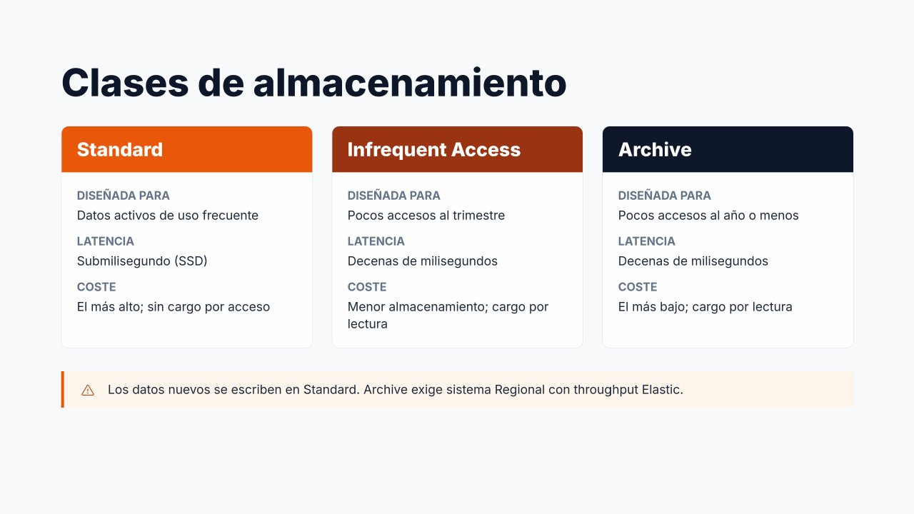
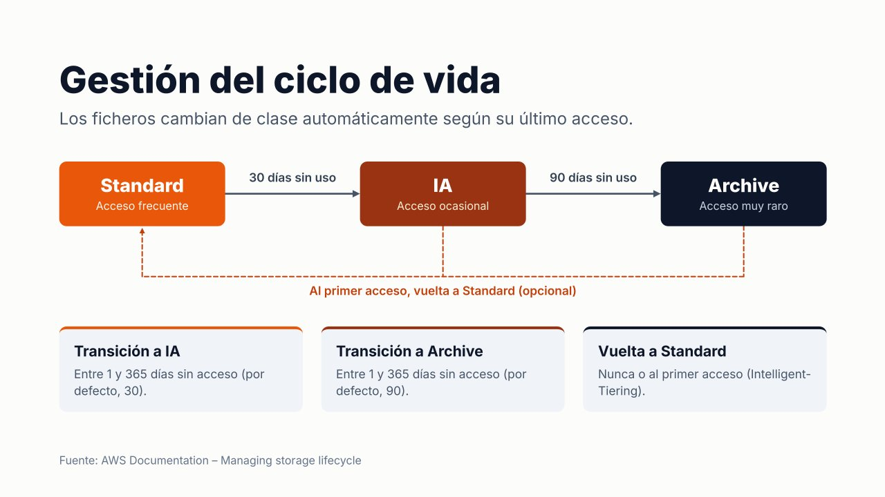

Clases de almacenamiento y gestión del ciclo de vida¶

No todos los ficheros se usan con la misma frecuencia. En un servidor de ficheros típico, una pequeña parte de los datos se consulta a diario, mientras que la mayoría (documentos antiguos, versiones anteriores, registros) apenas se vuelve a abrir. Pagar el mismo precio por todos ellos es un desperdicio. EFS resuelve este problema con clases de almacenamiento y una política de ciclo de vida que mueve los ficheros automáticamente entre ellas.
Clases de almacenamiento¶
| Clase | Diseñada para | Latencia | Coste de almacenamiento | Coste de acceso |
|---|---|---|---|---|
| Standard | Datos activos de uso frecuente | Submilisegundo (SSD) | El más alto | Sin cargo por lectura (en Elastic se paga el rendimiento) |
| Infrequent Access (IA) | Ficheros a los que se accede pocas veces al trimestre | Decenas de milisegundos (primer byte) | Mucho menor | Cargo por lectura y por transición |
| Archive | Datos de larga duración, accedidos pocas veces al año o menos (históricos, normativa) | Decenas de milisegundos | El más bajo | Cargo por lectura y por transición |
Aspectos clave:
- Un mismo sistema de archivos puede contener ficheros en las tres clases a la vez. Para la aplicación el cambio es completamente transparente: la ruta del fichero no cambia y se sigue leyendo con normalidad (solo con algo más de latencia).
- Todos los datos nuevos se escriben siempre en Standard.
- La clase Archive requiere un sistema de archivos Regional con modo de rendimiento Elastic.
- En los sistemas One Zone existen las clases equivalentes One Zone (Standard) y One Zone-IA, pero no Archive.
- En IA y Archive se factura un mínimo de 128 KiB por fichero: un fichero de 4 KiB en IA se cobra como si ocupara 128 KiB. Por eso estas clases resultan poco interesantes cuando la mayoría de los ficheros son muy pequeños.
- Archive tiene además una permanencia mínima de 90 días: un fichero que sale de Archive antes se factura como si hubiera permanecido ese tiempo.
Si todos los datos nuevos van a Standard, ¿cómo llegan los ficheros a IA o Archive? La respuesta es la gestión del ciclo de vida.
Gestión del ciclo de vida (Lifecycle Management)¶

La gestión del ciclo de vida mueve automáticamente los ficheros entre clases en función del tiempo transcurrido desde su último acceso. Se configura a nivel de sistema de archivos mediante una política de ciclo de vida, que puede definirse desde la consola, la AWS CLI, la API o como infraestructura como código.
La política tiene tres parámetros:
| Parámetro | Función | Valores |
|---|---|---|
Transición a IA (TransitionToIA) |
Días sin acceso tras los cuales un fichero pasa de Standard a IA | 1, 7, 14, 30, 60, 90, 180, 270 o 365 días, o Ninguna |
Transición a Archive (TransitionToArchive) |
Días sin acceso tras los cuales pasa a Archive | Mismos valores, o Ninguna |
Transición a Standard (TransitionToPrimaryStorageClass) |
Si el fichero vuelve a Standard cuando se utiliza | Ninguna o Al primer acceso |
Cuando se crea un sistema de archivos desde la consola, AWS aplica una política recomendada: los ficheros pasan a IA tras 30 días sin acceso y a Archive tras 90 días. Es un buen punto de partida para la mayoría de los casos.
EFS Intelligent-Tiering¶
Por defecto, un fichero que se ha movido a IA o Archive permanece allí aunque vuelva a leerse, y cada lectura tiene un cargo. Si se configura la transición a Standard «al primer acceso», el fichero regresa automáticamente a Standard en cuanto se utiliza.
La combinación de las transiciones hacia IA/Archive con la vuelta al primer acceso se conoce como EFS Intelligent-Tiering. Es especialmente útil cuando no se conoce bien el patrón de acceso de los datos: lo que se usa se mantiene rápido y lo que deja de usarse se abarata.
Matices importantes¶
- Los metadatos del sistema de archivos (nombres, estructura de directorios, permisos) permanecen siempre en Standard, de modo que listar directorios sigue siendo rápido aunque los ficheros estén en Archive.
- Cada transición entre clases tiene un pequeño coste. Hay que evitar políticas que provoquen movimientos constantes de los mismos ficheros (por ejemplo, transición a IA tras 1 día con vuelta al primer acceso para ficheros que se leen cada dos días).
- Leer datos de IA o Archive tiene un coste de recuperación: es exactamente el «coste de recuperación» que menciona el criterio de evaluación al escoger la clase.
Configurar la política de ciclo de vida¶
- EFS → Sistemas de archivos, seleccionar el sistema.
- En la sección General, pulsar Editar.
- En Administración del ciclo de vida:
- Transición a IA: 30 días desde el último acceso.
- Transición a Archive: 90 días desde el último acceso.
- Transición a Standard: Al primer acceso.
- Guardar cambios.
Para desactivar el ciclo de vida se selecciona Ninguna en las tres opciones. La política vigente se consulta en la sección General del sistema de archivos.
# Política recomendada con Intelligent-Tiering
aws efs put-lifecycle-configuration --file-system-id fs-0abc... \
--lifecycle-policies \
'[{"TransitionToIA":"AFTER_30_DAYS"},
{"TransitionToArchive":"AFTER_90_DAYS"},
{"TransitionToPrimaryStorageClass":"AFTER_1_ACCESS"}]'
# Consultar la política vigente
aws efs describe-lifecycle-configuration --file-system-id fs-0abc...
# Desactivar el ciclo de vida (todos los ficheros nuevos se quedan en Standard)
aws efs put-lifecycle-configuration --file-system-id fs-0abc... --lifecycle-policies '[]'
Cambiar la clase durante el ciclo de vida
Modificar la política es la forma de cambiar la clase de almacenamiento de los datos de un sistema EFS: no se mueven ficheros a mano. Al desactivar la política, los ficheros que ya están en IA o Archive no vuelven a Standard por sí solos; volverán al leerse si está configurada la transición al primer acceso.
Comprobar el efecto¶
La métrica de CloudWatch StorageBytes, con la dimensión StorageClass (Total, Standard, IA, Archive), muestra cuántos datos hay en cada clase. También puede consultarse el tamaño medido:
- En EFS → Sistemas de archivos, la columna Tamaño medido y, al abrir el sistema, la sección Tamaño medido desglosan el espacio en Standard, IA y Archive.
- La pestaña Supervisión del sistema muestra las gráficas de CloudWatch, entre ellas el almacenamiento por clase.
Ejemplo: efecto en el coste¶
Un sistema de archivos con 1.000 GB en el que solo el 20 % de los ficheros se usa cada mes (precios aproximados de us-east-1):
| Configuración | Cálculo | Coste mensual aproximado |
|---|---|---|
| Todo en Standard | 1.000 GB × 0,30 USD | 300 USD |
| Ciclo de vida a IA | 200 × 0,30 + 800 × 0,016 | ≈ 73 USD + lecturas de IA |
El ciclo de vida reduce el coste de almacenamiento en más de un 75 %, siempre que los datos fríos sean realmente fríos. Si se leyeran a menudo, los cargos por lectura anularían el ahorro: para eso existe la vuelta a Standard al primer acceso.
Ejemplo de elección de política¶
| Escenario | Política | Justificación |
|---|---|---|
| Contenido de un WordPress (imágenes subidas) | IA a 30 días, Archive a 90, vuelta al primer acceso | Las imágenes antiguas se ven poco, pero si una entrada antigua se hace popular vuelve a Standard |
| Directorios de usuario | IA a 30 días, vuelta al primer acceso | Muchos documentos olvidados; los que se usan, rápidos |
| Repositorio de artefactos de CI/CD | IA a 14 días, sin vuelta | Los artefactos antiguos casi nunca se reutilizan |
| Datos de entrenamiento de ML leídos en cada ejecución | Sin ciclo de vida | Se leen constantemente: IA saldría más caro por los cargos de lectura |
| Documentación que debe conservarse 10 años | IA a 7 días, Archive a 30 | Prima el coste de almacenamiento; el acceso es excepcional |
Una buena política de ciclo de vida permite reducir de forma significativa el coste sin intervención manual, lo que conecta con el criterio de ajustar los parámetros que afectan a los costes.
Referencias¶
- AWS. EFS storage classes — Clases de almacenamiento
- AWS. Managing storage lifecycle — Ciclo de vida
- AWS. PutLifecycleConfiguration — Referencia de la API
- AWS. Amazon EFS pricing — Precios